Beyanlab
Laborverbrauchsmaterial, Schutzausrüstung & Waagen · 20 Geräte
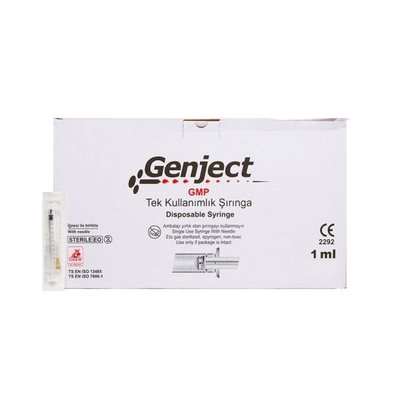
Steril-Spritze 1ccSterile Einwegspritze für präzise Kleinvolumen-Dosierungen im Labor.
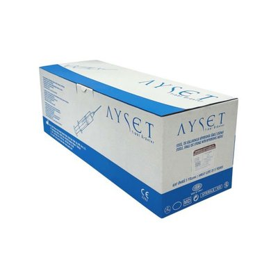
Steril-Spritze 10ccSterile Einwegspritze für größere Flüssigkeitsvolumen im Laboralltag.
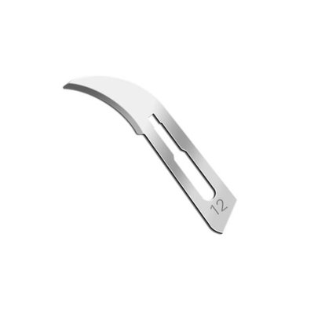
Skalpellklinge Nr. 12Sterile Skalpellklinge für Präparationen und feine Schnitte.
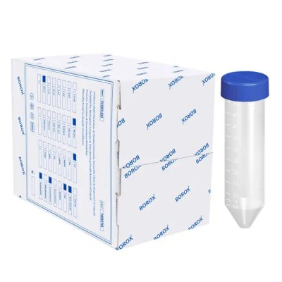
Falcon-Röhrchen 50mlKonisches Zentrifugenröhrchen für Probenaufbewahrung und Zentrifugation.
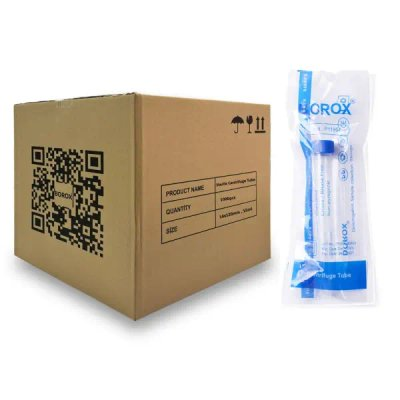
Falcon-Röhrchen 15ml sterilSteriles Zentrifugenröhrchen für Probenahme und -lagerung.
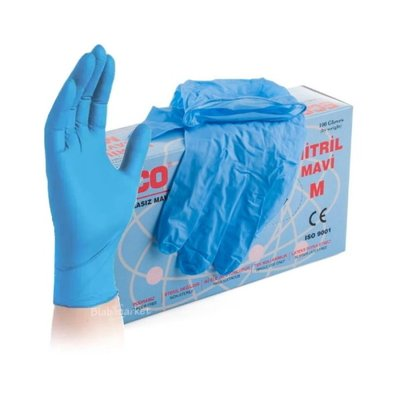
Nitril-Einweghandschuhe Blau MChemikalienbeständige Einweghandschuhe für den Laborschutz.
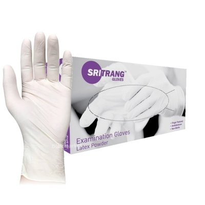
Latex-Einweghandschuhe L gepudertGepuderte Einweghandschuhe für allgemeine Labor- und Hygienearbeiten.
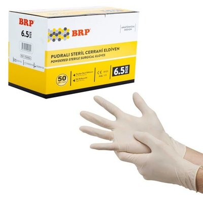
Steril-OP-Handschuh Nr. 8.5Steriler OP-Handschuh für aseptische Arbeiten im Labor.
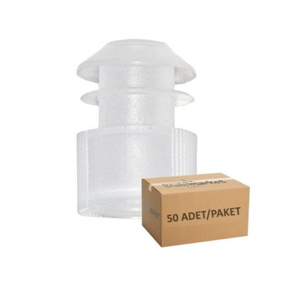
Reagenzglas-Kappe weiß 16mmVerschlusskappe zum sicheren Abdecken von Reagenzgläsern.
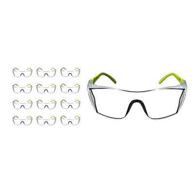
Laborschutzbrille grünSchutzbrille zum Augenschutz beim Arbeiten mit Chemikalien.
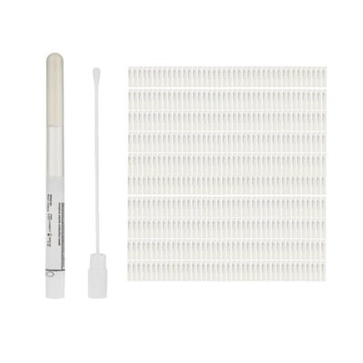
Stuart Transport-AbstrichtupferAbstrichtupfer mit Transportmedium für die mikrobiologische Probenahme.
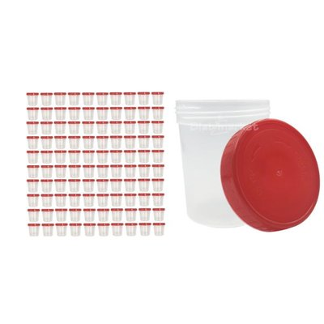
Urin-Probenbehälter 100mlSteriler Probenbehälter für die Urinanalyse im Labor.
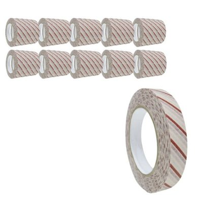
Sterilisations-TestpapierIndikatorpapier zur Kontrolle des Sterilisationserfolgs.
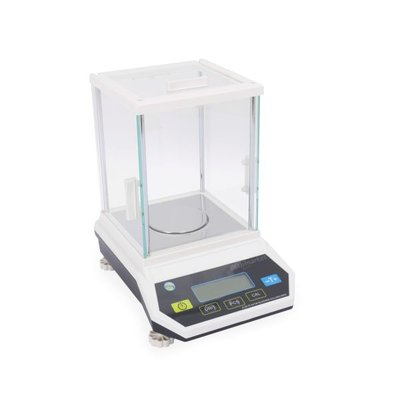
FLY-500 PräzisionswaagePräzisionswaage für genaue Wägungen kleinerer Probenmengen.
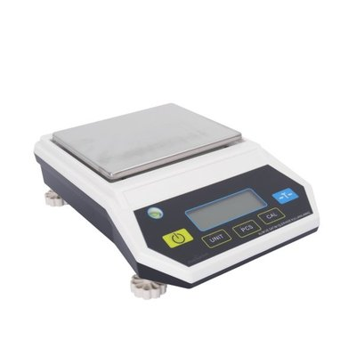
FLY-5000 PräzisionswaagePräzisionswaage mit höherer Kapazität für den Laboralltag.
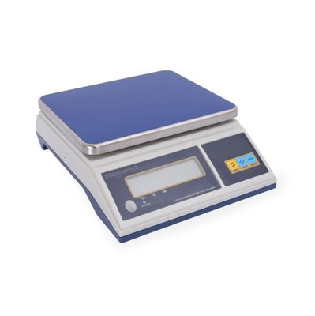
JZC-TSC-30 PlattformwaageRobuste Plattformwaage für größere Probengewichte.
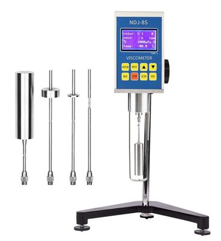
Digitales RotationsviskosimeterMisst die Viskosität von Flüssigkeiten zur Qualitätskontrolle.
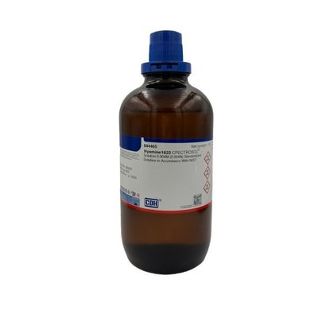
Hyamin-1622-LösungKationisches Tensid-Reagenz für analytische Titrationen.
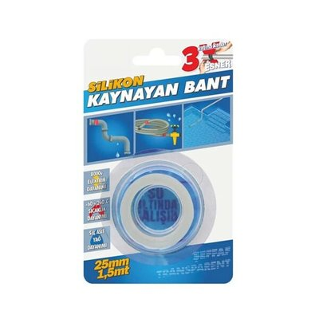
Silikon-ReparaturbandSelbstverschweißendes Band zur Abdichtung von Schläuchen und Leitungen.
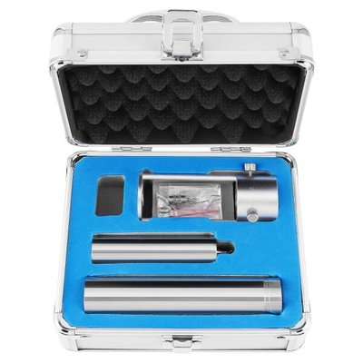
O-Rotor für NDJ-8SErsatz-Spindel (Rotor) für das NDJ-8S Viskosimeter.